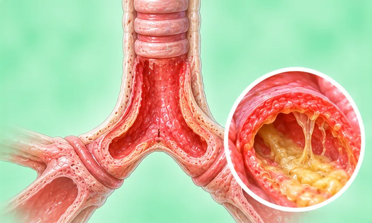
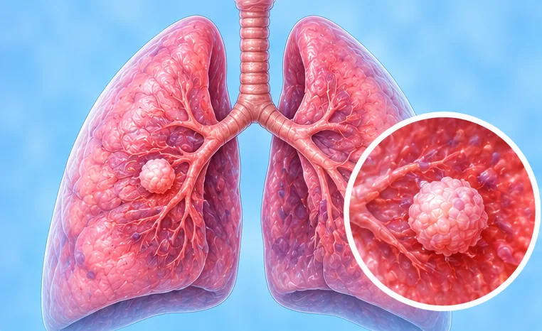

Paru & pernapasan
65 kondisi dan gejala

Abses paru Asma
Asma- Asma jantung (sesak napas terkait jantung)
- Asma varian batuk
- Aspergilosis paru (infeksi jamur)
- Batuk berkepanjangan
- Batuk darah (hemoptisis)
- Bronkiektasis
- Bronkitis
- Bronkitis akut
- Bronkitis kronis
- Bronkopneumonia
 Bula paru (kantong udara besar)
Bula paru (kantong udara besar) Cairan di paru (edema paru)
Cairan di paru (edema paru)- Cairan di rongga dada (efusi pleura)
- Dada berbentuk tong
- Efusi pleura ganas (cairan di sekitar paru)
- Emfisema
- Fibrosis paru
- Gagal napas
- Gagal napas akut
- Gagal napas kronis
- Hemosiderosis paru idiopatik
- Infeksi jamur paru
- Infeksi saluran pernapasan bawah
- Kilotoraks
- Kor pulmonale (penyakit jantung akibat paru)
- Kor pulmonale kronis (penyakit jantung akibat paru)
- Kriptokokosis paru (infeksi jamur paru)
- Limfangioleiomiomatosis (LAM)
- Mesotelioma pleura
- Nanah di rongga dada (empiema)

Nodul paru- Paragonimiasis (infeksi cacing paru)
- Paru kolaps sebagian (atelektasis)
- Paru-paru kolaps (pneumotoraks)
- Penyakit paru interstisial
- Pilek atau infeksi saluran napas atas
- Pilek dengan infeksi bakteri
- Pleuritis (radang selaput paru)
- Pneumokoniosis (penyakit paru akibat debu)
- Pneumonia (radang paru-paru)
- Pneumonia adenovirus
- Pneumonia aspirasi
- Pneumonia bakteri
- Pneumonia Chlamydia pneumoniae
- Pneumonia hipostatik
- Pneumonia interstisial
- Pneumonia Klebsiella
- Pneumonia komunitas
- Pneumonia lobaris (infeksi paru)
- Pneumonia mikoplasma
- Pneumonia Pneumocystis (PCP)
- Pneumonia pneumokokus (Streptococcus pneumoniae)
- Pneumonia stafilokokus
- Pneumonia virus
- Pneumonia yang didapat di rumah sakit
- Pneumonitis radiasi (setelah radioterapi)
- Pneumotoraks spontan (paru-paru kolaps)
- Sarkoidosis
- Sarkoidosis paru
- Silikosis
- Sindrom hiperventilasi
- Trakeitis (radang batang tenggorok)
- Tumor paru jinak